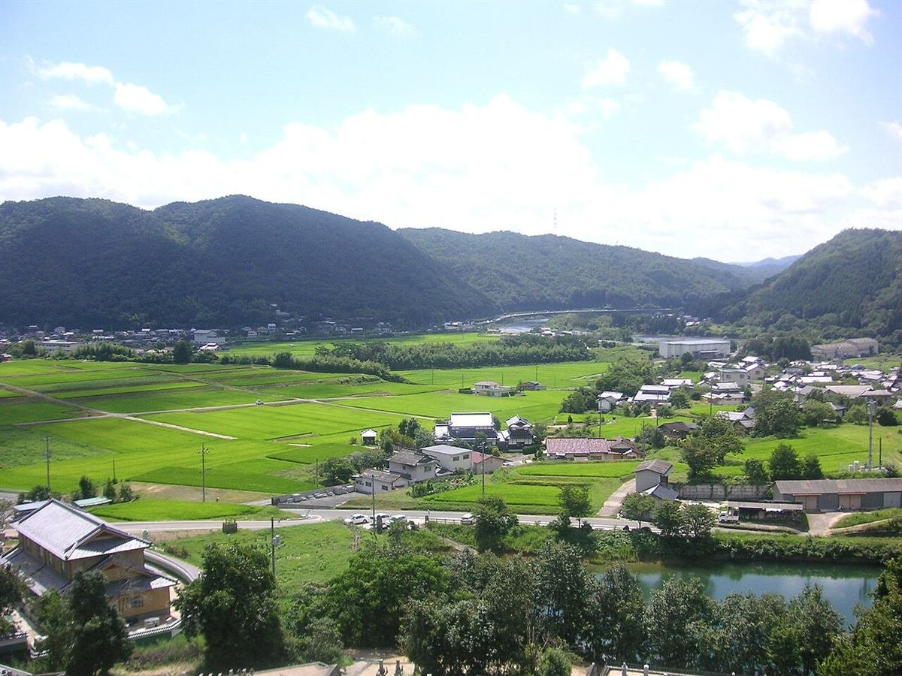
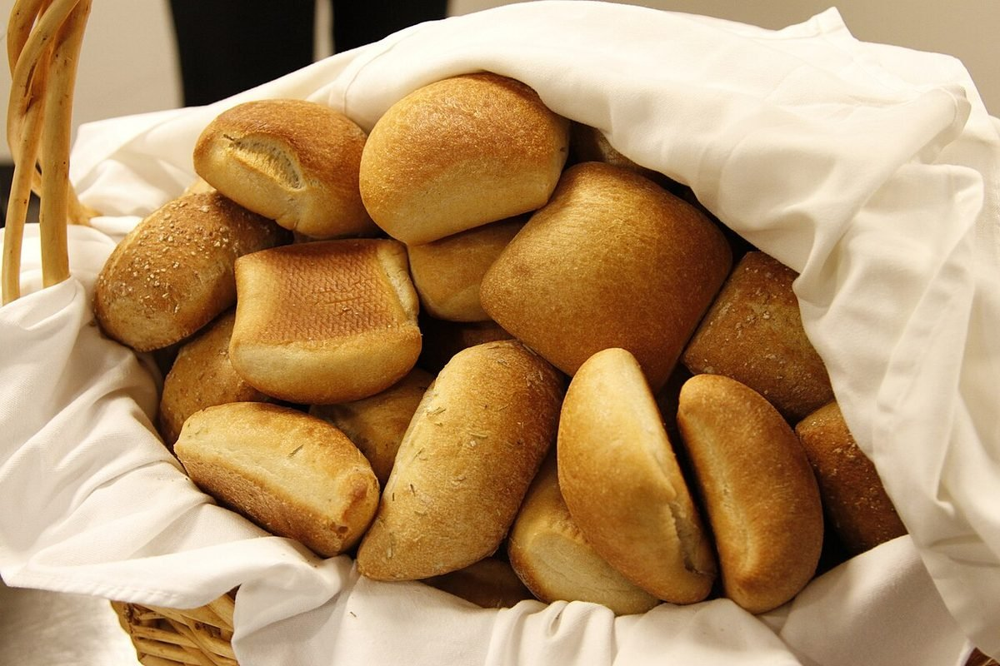
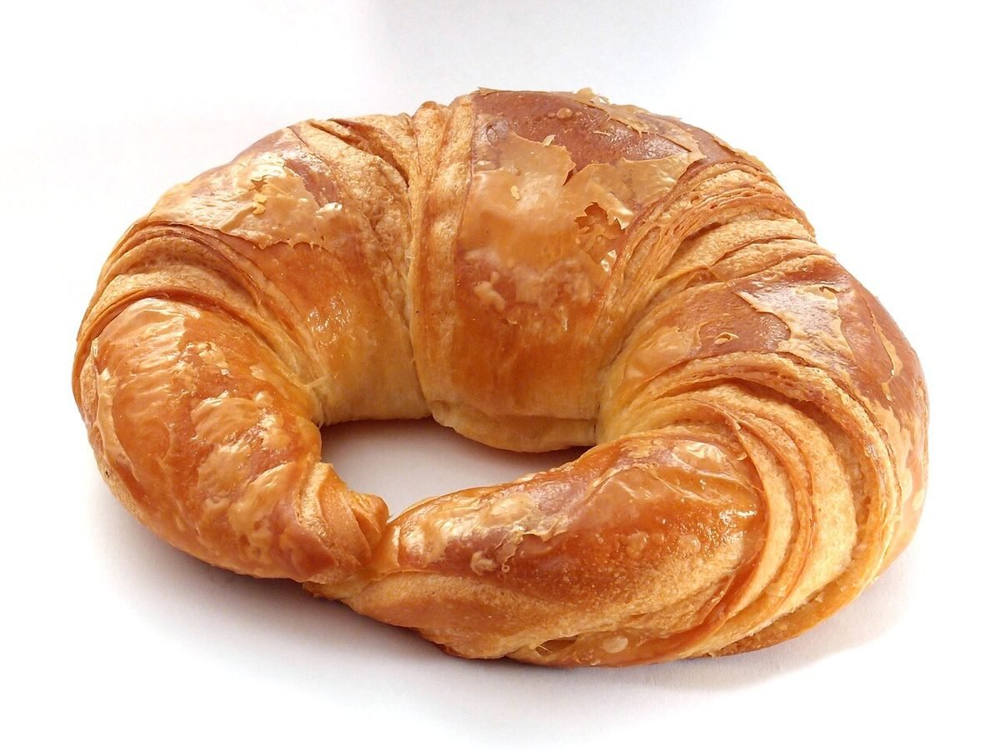

麦とパン
パンの原料は、麦です。このページでは、山あいの朝と麦の色をテーマに、loccomica の情報をお届けします。
※このテーマは制作側の案です。お店の考えを示すものではありません。
お店の情報
詳しい情報は準備中です。お電話またはInstagramでご確認ください。
- 営業時間
- 準備中(お問い合わせください)
- 定休日
- 準備中(お問い合わせください)
- 料金
- 準備中(お問い合わせください)


掲載の写真はフリー素材のイメージです。お店の実際の様子や商品ではありません。日本国外で撮影されたものや、撮影地が不明なものを含みます。

パンの原料は、麦です。このページでは、山あいの朝と麦の色をテーマに、loccomica の情報をお届けします。
※このテーマは制作側の案です。お店の考えを示すものではありません。
詳しい情報は準備中です。お電話またはInstagramでご確認ください。

